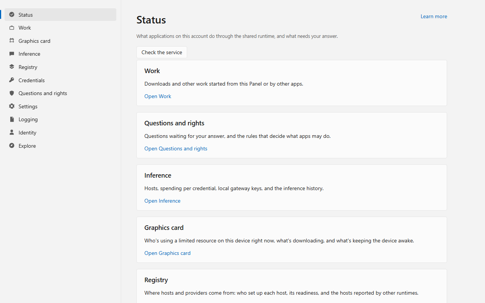

Use this capability in your application
Go usage example
Contract:
Client libraries and a shared runtime
Add durable work, shared data, AI inference and interaction with other applications through common capability APIs. OA’s shared runtime connects them to operating-system facilities, existing engines and remote services. The same application integration works with compatible providers on different machines.
On Windows, the Panel’s Apps Catalog installs or repairs OpenCode and installs the OpenAbstractions integration for ComfyUI. ComfyUI itself comes from its official source. Each guide explains setup and its limits.
Developers ship or depend on the OA runtime the way they ship the Visual C++ Redistributable, and people meet one shared service on their machine.
Windows Setup installs the runtime and the Panel. Add OpenCode and ComfyUI integrations from the Panel's Catalog. An application that adopts OA can bring the runtime along in its own installer.
The 0.8.1 release notes describe the packages and known installation limits. Download SHA256SUMS beside the installer to verify its checksum.
New in 0.8.1: local OpenCode improvements, a choice of destination chat, clearer permission prompts and installation repairs. Read what changed.
How it fits your application
Use the capabilities your application needs. The OA runtime runs on the user’s machine and connects them to compatible implementations, including services on other machines. Users manage permissions and provider choices in one place.
OpenAbstractions Messages
OpenAbstractions Messages is a shared service for agent notes. Claude and OpenCode chats exchange messages through the OpenAbstractions runtime. They reconnect to their existing inboxes after the runtime restarts.
Review connection permissions and retained message activity in the Panel.
Explore OpenAbstractions
Choose a capability to see what it does and where it helps. Each example includes links to its API and current implementation.
Pick a capability, or step through them with Previous and Next.
Downloads, durable work, shared storage, permissions, questions to the user, credentials, logging, configuration, identity, who holds the graphics card and finding the right service (resolution).
Model catalogue, routing, inference, a local model server, lending model files, the stores already on this machine, and the MCP gateway.
1 of 21 · Foundations · Verified downloads
Contract:
Browse with the buttons above or the arrow keys when the carousel is focused.
On a real machine
Each case is a task a person recognizes, what OA did, and what was measured or tested on the owner's development machine.
A program starts a multi-gigabyte download, and the person closes the program and opens it again.
The program submits one retained job. OA keeps the job's record, and the program finds the same accepted work after it reopens.
The ComfyUI download node's tests reopen it and list the same retained job (abstraction-job, adopter-comfyui). The case and its source.
ComfyUI needs more of the graphics card than is free. OA's model server holds a model on the same card, and a stock chat engine such as LM Studio may hold another.
OA's own engines and ComfyUI with OA's integration each hold a lease and give the memory back when asked. A stock engine is measured as memory OA does not manage and named to the person.
The ComfyUI connector takes the card lease for the models ComfyUI loads, and OA's model server yields its lease once the measurement confirms the memory fell. The case and its source.
Tools you can use
Manage background work, choose permissions, inspect activity or connect your assistant to OA. These examples show the current source; release notes identify the tools and commands included in each package.
Control panel
The local panel brings runtime health, accepted jobs, permission questions, rights, configuration, logs, and identity into one place. You can inspect a job, cancel work you own, answer a first-use question, and download a completed result.
On Windows, the Apps Catalog installs or repairs OpenCode and installs the OpenAbstractions integration for ComfyUI. The Device page shows storage by type, free space, the largest reported items and verified duplicates. Remove offers removal for eligible items, and Restore in Activity retrieves eligible removed items from the download archive.

Central command
The openabstractions command checks runtime status, probes capability access, manages durable jobs and downloads, configures credentials and providers, reviews rights, and lists or activates registered applications.
MCP gateway
Connect an MCP-compatible assistant to OA for application and model discovery, setup requests, model responses, and background inference jobs.
An optional program in the runtime installers. Application commands run through OA's native mediation, which applies the application's own declaration and the caller's rights.
Tool 1 of 3: Control panel
For developers
The first example sends your program's log records to the shared log service, where the Panel and other tools read them. The second asks a model a question through OA; the person chooses which model server answers, and the service keeps any API key out of your application.
package main
import (
"context"
"fmt"
"log"
"log/slog"
"time"
logging "github.com/openabstractions/abstraction-logging/go"
)
func main() {
h := logging.Default("my-app")
slog.SetDefault(slog.New(h))
slog.Info("worker started", "component", "indexer")
// Close drains the queued records before the program exits. With no OA
// runtime it returns the resolution error, and log.Fatal prints it.
ctx, cancel := context.WithTimeout(context.Background(), 2*time.Second)
defer cancel()
counts, err := h.Close(ctx)
if err != nil {
log.Fatal(err)
}
fmt.Printf("sent %d record to OA\n", counts.Written)
}import logging
from abstraction.facade.client import Machine
from abstraction.logging.handler import ServiceHandler
handler = ServiceHandler(Machine().resolve_log(), program="my-app")
logging.getLogger().addHandler(handler)
logging.getLogger("my-app").warning("disk %s nearly full", "D:")Build and run the logging example
Chat needs a model server on this machine, such as Ollama, and one grant for your built program. Build first: the grant names the program's absolute path. Then run openabstractions rights grant --for inference --program <absolute path> --host ollama and pass a model name, such as qwen3:8b, as the first argument.
package main
import (
"context"
"fmt"
"log"
"os"
"time"
facade "github.com/openabstractions/abstraction-facade/go"
wire "github.com/openabstractions/abstraction-inference/go/abstraction/inference/api"
)
func main() {
ctx, cancel := context.WithTimeout(context.Background(), 30*time.Second)
defer cancel()
chat, err := facade.Discover().ResolveInference(ctx, facade.Requirements{})
if err != nil {
log.Fatal(err)
}
reply, err := chat.Complete(ctx, wire.Request{
Model: os.Args[1], // a model name, such as qwen3:8b
Messages: []wire.Message{{Role: wire.RoleUser, Parts: []wire.Part{
{Kind: wire.PartKindText, Text: "Say hello in five words."},
}}},
})
if err != nil {
log.Fatal(err)
}
if reply.Outcome != wire.ReplyOutcomeCompleted {
log.Fatalf("chat %s: %s", reply.Outcome, reply.Reason)
}
for _, part := range reply.Message.Parts {
fmt.Print(part.Text)
}
}import sys
import time
import abstraction.inference.api as api
from abstraction.facade.client import Machine
machine = Machine(deadline=time.monotonic() + 30)
chat = machine.resolve_inference()
reply = chat.complete(api.Request(
model=sys.argv[1], # a model name, such as qwen3:8b
messages=[api.Message(role=api.Role.USER, parts=[
api.Part(kind=api.PartKind.TEXT, text="Say hello in five words."),
])],
))
if reply.outcome != api.ReplyOutcome.COMPLETED:
raise SystemExit(f"chat {reply.outcome.value}: {reply.reason}")
print("".join(part.text for part in reply.message.parts))The Python packages install from source until they are published to PyPI. Follow the Python install steps.
All five languages can use OA’s shared native IPC. Go, Python and C++ include it in their default client entry points. Rust and JavaScript use separate native connector packages. See the language setup guides for C++, Rust and JavaScript, dependencies and runtime identity checks.
Next steps